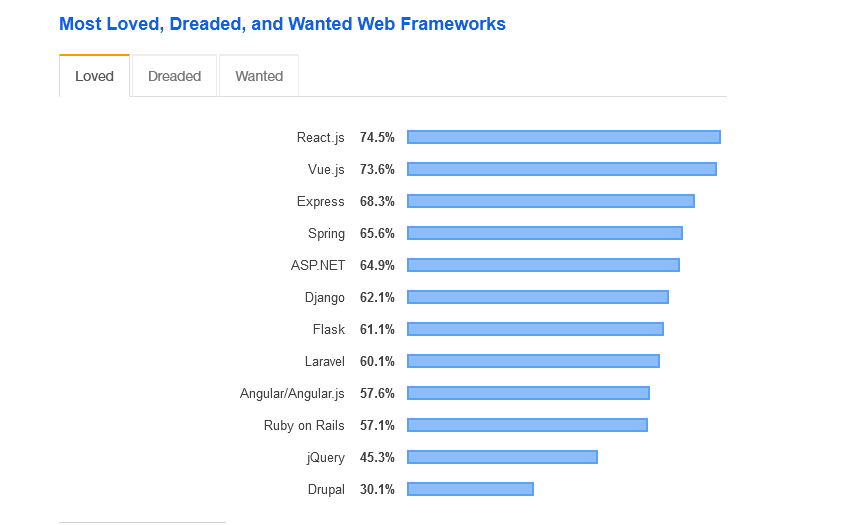
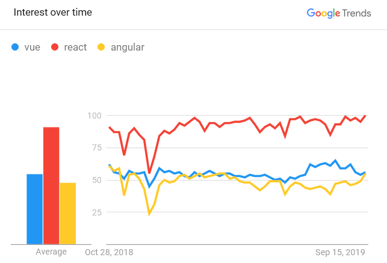
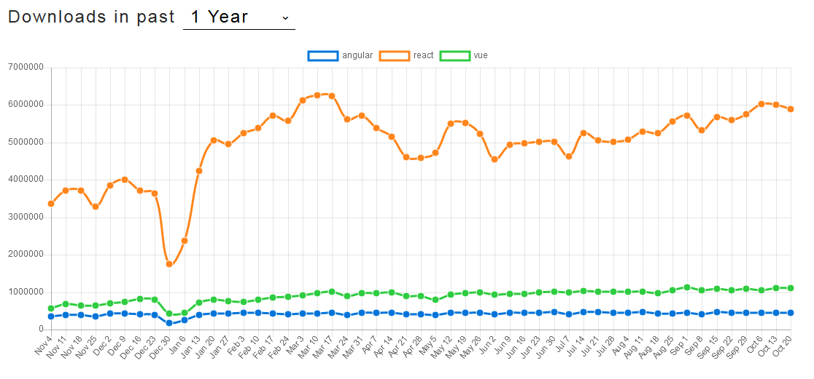

همونطور که میدونیم توی دنیای مدرن و رقابتی برنامهنویسی وب هستیم. با انبوهی از ابزارهای داغ و جذاب که پیش روی ما توسعه دهندههاست، دامنه انتخاب ابزارها گستردهتر و به همون اندازه سختتر شده. یک نکته روانشناسی/بیزینسی وجود داره که میگه "وقتی انبوهی از انتخابها رو در اختیار مشتری قرار میدید، احتمال اینکه مشتری هیچ کدوم رو نخره خیلی زیاد هست". خیلی سادست؛ چون مشتری گیج میشه. توی برنامهنویسی وب مخصوصا قسمت Front-end، توی این چند سال اخیر ابزارهای بیشماری معرفی شده. قبلا جیکوئری همه کاره بود. اما الان بیشتر از 30 فریمورک جاوا اسکریپتی وجود داره که هر کدوم برای کاربرد خاصی توسعه داده میشن. استفاده از یک ابزار همونطور که میتونه باعث پیشرفت بشه، به همون اندازه میتونه ما رو از رقیبها عقب بندازه. پس برای رقابت، لازم داریم براساس نیازها از ابزار مناسب استفاده کنیم.
توی این مقاله میخوایم سه فریمورک داغ و پرطرفدار جاوا اسکریپتی رو با هم مقایسه کنیم و مشخص کنیم برای کاربردهای مختلف، کدوم فریمورک بهتره. امروز سه فریمورک زیر رو بررسی میکنیم:
React-js Vue-js Angular-js
برای انتخاب یک فریمورک خوب سوالات زیر رو باید در نظر داشته باشیم:
- کدوم فریمورک برای پروژه بعدی من بهتره؟
- کدوم فریمورک عملکرد (Performance) بالاتری داره؟
- برای پروژههای بزرگ/کوچیک کدوم فریمورک بهتره؟
- کار کردن با کدوم فریمورک راحتتره (از لحاظ یادگیری، اندازه انجمنها و ...) ؟
در آخر این مقاله احتمالا بتونیم به جواب همه این سوالات برسیم.
اول با یک تاریخچه کوتاه درباره این سه فریمورک آشنا بشیم
1. تاریخچه
Angular
ابتدا با نام AngularJs توی سال 2010 توسط گوگل منتشر شد که بعدا واژه "js" از اون حذف شد. از نامدارترین وبسایتهایی که از انگولار استفاده میکنن میشه به گوگل، یوتوب و یودمی اشاره کرد. این فریمورک با زبان تایپاسکریپت توسعه داده میشه.
React
توی سال 2013 توسط فیسبوک منتشر شد. معمولا با React.js و ReactJs هم شناخته میشه. اینستاگرام، پیپل و توئیتر از جلمه وبسایتهایی هستن که از ریاکت استفاده میکنن. توی بعضی از منابع ریاکت رو یک کتابخونه میدونن.
Vue
جدیدترین فریمورک توی این مقایسه ما هست. توی سال 2014 توسط ایوان یو، مهندس سابق گوگل توسعه داده شد. سایتهای 9gag، گیتلب و لاراول از این فریمورک استفاده میکنن. نحوه تلفظ این فریمورک مثل View هست.
...
2. کدوم فریمورک محبوب تره؟
| - | انگولار | ریاکت | ویو |
|---|---|---|---|
| Star | 60.3K | 147K | 168K |
| Fork | 16.4K | 28K | 24K |
| Watch | 3.2K | 6.7K | 6.1K |
| مشارکت کننده در توسعه (Contributors) | 1110 | 1377 | 292 |
اگه آمار محبوبیت گیتهاب رو براساس استار بسنجیم، ویو با 163هزار استار بالاتر از ریرکت و انگولا قرار داره. همچنین ویو با این تعداد استار، توی رتبه سوم محبوبترین ریپازیتوری های کل گیتهاب قرار داره.
و عکس زیر آمار سال 2019 وبسایت Stackoverflow هست که میبینیم ریاکت بالاتر از ویو دوست داشتنی ترین (Most Loved) فریمورک وب هست:

معمولا توی سطح وب، مقایسهها با گوگلترندز هم انجام میشه:

طبق این آمار، توی یک سال گذشته واژه react بیشتر از vue و angular توی گوگل سرچ شده.
و آخرین آمار مربوط میشه به تعداد دانلود از npm توی یک سال گذشته که توی این آمار ریرکت با اختلاف بالاتر از ویو و انگولار قرار گرفته:

خب این آمارها نشون میده علاقهها به سمت ریرکت بیشتره. اما این به این معنی نیست که این فریمورک بهترین باشه. قطعا چند فاکتور دیگه هم وجود داره که باید اونها رو هم بررسی کنیم.
...
3. عملکرد (Performance)
هر سه فریمورک زمان اجرا (Run time) بسیار سریعی دارن و از لحاظ سرعت اختلاف قابل توجهی دیده نمیشه. اما موضوع اصلی توی عملکرد، حجم و اندازه پروژه هست. انگولار یک فریمورک کامل هست که اکثر چیزاهایی که یک توسعهدهنده لازم داره رو در اختیارش قرار میده. برای همین انگولار نسبت به دو فریمورک دیگه حجم بالاتری داره. در حالت gzip فعال، حجم فایل انگولار 143کیلو بایت هست. در مقایسه با 43کیلوبایت ریاکت و 23کیلوبایت ویو. با توجه به حجم کم ویو، این فریمورک از لحاظ مصرف رم بسیار ایدهآل تر از بقیه فریمورک ها هست.
یه مفهومی وجود داره به اسم DOM که عملکرد یک فریمورک تا حد زیادی به این بستگی داره. فریمورکهایی که از Real DOM استفاده میکنن معمولا عمکرد پایینتر و دیباگینگ سختتری نسبت به فریمورکهایی دارن که از Virtual DOM استفاده میکنن. ویو و ریاکت از Virtual DOM استفاده میکنن و انگولار از Real DOM. البته باید درنظر داشته باشیم مسئله عملکرد نباید به عنوان معیار اصلی برای قضاوت در نظر گرفته بشه و همونطور که گفتم توی عملکرد این سه، اختلاف قابل توجهی دیده نمیشه.
4. یادگیری
انگولار
همونطور که گفته شد، انگولار فریمورکی هست که اکثر ابزارهایی که یک توسعهدهنده از یک فریمورک انتظار داره رو فراهم کرده. به همین دلیل و همچنین باتوجه به اینکه هنگام کار با این فریمورک با مفاهیم تایپاسکریپت و MVC سر و کار داریم، برای یادگیری انگولار زمان بیشتری باید صرف بشه
ریاکت
مستندات وبسایت ریاکت بسیار کامل و جامع هست و به اکثر مسائلی که یک توسعهدهنده ممکنه با اون مواجه بشه توی انجمنهایی مثل Stackoverflow پاسخ داده شده. ریاکت خام، یک فریمورک کاملی نیست و هسته اصلی این فریمورک امکانات پایه رو در اختیار ما قرار میده و برای استفاده از ویژگیهای پیشرفته باید از کتابخونهها و ابزارها به صورت جداگونه استفاده بشه.
ویو
با توجه به سبک بودن این فریمورک، یادگیری ویو خیلی راحتتر از دو فریمورک دیگه هست. مثل ریاکت، ویو فقط امکانات پایهای رو در اختیار توسعهدهنده قرار میده. که این سرعت یادگیری رو بالاتر میبره.
با توجه به چیزی که گفته شد خیلی از شرکتها به دلیل راحتی استفاده، ویو رو ترجیح میدن. یکی از دلایل راحت بودن کار با ویو نسبت به بقیه فریمورکها اینه که میتونیم با داشتن اطلاعات کمتری از جاوا اسکریپت با این فریمورک کار کنیم. یعنی ویو ما رو مجبور نمیکنه که حتما با جدیدترین تغییرات جاوا اسکریپت کدنویسی کنیم. همچنین نحوه کار با این فریمورک بسیار انعطافپذیر تر از بقیه فریمورکها هست. یعنی هر کس میتونه به سبک و معماری خودش از ویو استفاده کنه. این مثل شمشیر دو لبه هست. چون حین اینکه پروژهی ما بزرگتر میشه، کدهای نوشتهشده به سبک قدیمی و شخصی کار رو برای دیباگینگ و تست برنامه سختتر میکنه.
جمع بندی
انگولار و ریاکت توسط دو کمپانی بزرگ نرمافزاری یعنی گوگل و فیسبوک پشتیبانی میشن. اما بزرگترین پشتیبان ویو، انجمنهای اپنسورس هست. هر سه فریمورک بسیار سریع و قدرتمند هستن. جدا از علاقه شخصی هر شخصی، مهمترین معیاری که باید در نظر داشته باشیم، حجم پروژهی ما هست. استفاده از انگولار برای پروژههای کوچیک مثل استفاده از بنز برای مسافرتهای داخل شهری هست. افراد زیادی هستن که با این مسئله هیچ مشکلی ندارن :)
انگولار قدیمیترین فریمورک مورد مقایسه ما هست. یک فریمورک کامل که مناسب برای پروژههای بزرگ هست. انگولار از معماری MVC و زبان تایپاسکریپت استفاده میکنه. یادگیری انگولار نسبت به بقیه فریمورکها مقداری سختتر هست. اما یادگیری مباحثی که با اون مواجه میشیم مثل معماری MVC و زبان تایپاسکریپت مفیده حتی برای وقتی که با این فریمورک کار نمیکنیم. به دلیل کامل بودن این فریمورک، سایز فایل اون حدود 500 کیلوبایت هست. اگه علاقهمند به برنامهنویسی شیگرا هستین، اگه پروژهی بزرگی رو میخواید راهاندازی کنید، انگولار انتخاب خوبی میتونه باشه.
ریاکت انجمنها و توسعهدهنده های بسیار زیادی داره که کمک میکنه به یادگیری و پیشرفت سریعتر. یادگیری ریاکت راحت از انگولار هست. استفاده از این فریمورک برای پروژههایی با اندازه متوسط پیشنهاد شده.
ویو بدلیل راحتی استفاده، یادگیری سریع و سبک بودن اون، یکی از سریعترین رشدها رو بین همه فریمورکها داشته که باعث شده سومین مخزن (Repository) پرطرفدار کل گیتهاب لقب بگیره. ویو سبکترین فریمورک مورد مقایسه ما هست که برای تجربه کامل یک فریمورک لازم داریم تا موارد مورد نیازمون رو به صورت جداگونه به فریمورک اضافه کنیم. برای شخصی که اطلاعات چندانی از جاوا اسکریپت و مباحث جدید فرانت-اند نداره یادگیری ویو بهترین گزینه هست. همچنین برای پروژههای کوچیک مناسبترین گزینه استفاده از ویو هست.
...
منابعی که برای این مقاله استفاده کردم: